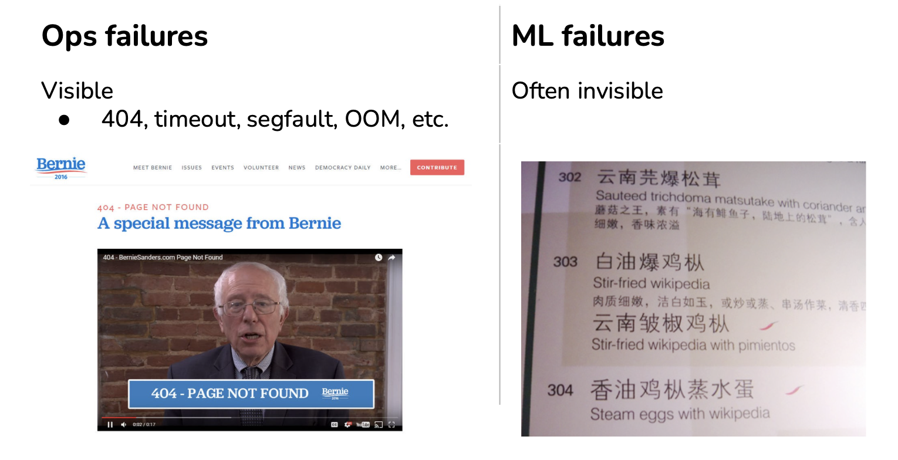
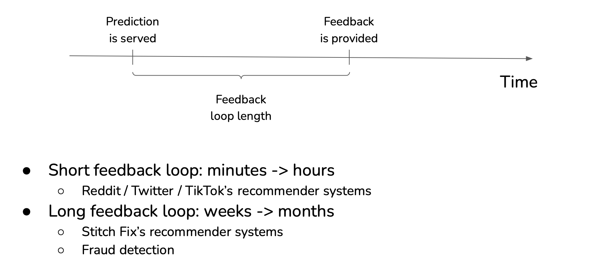
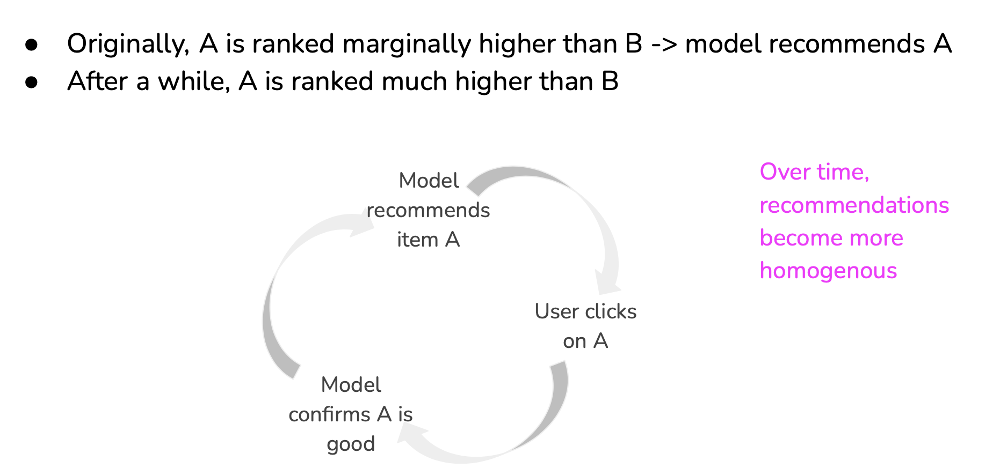
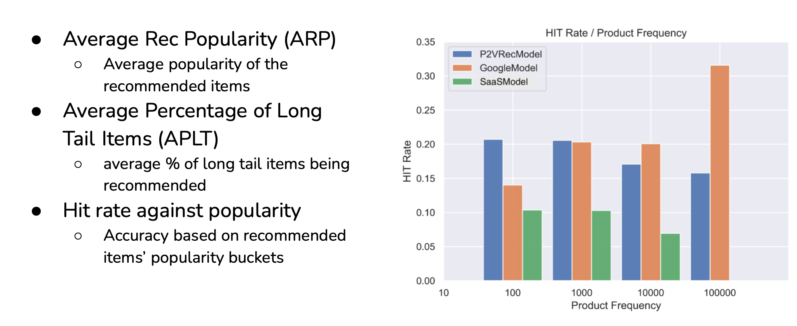
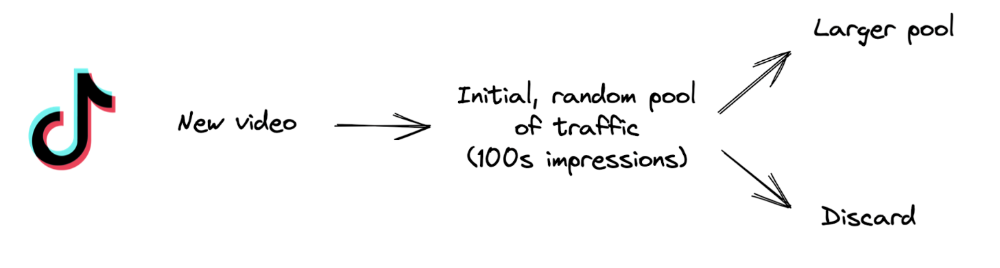
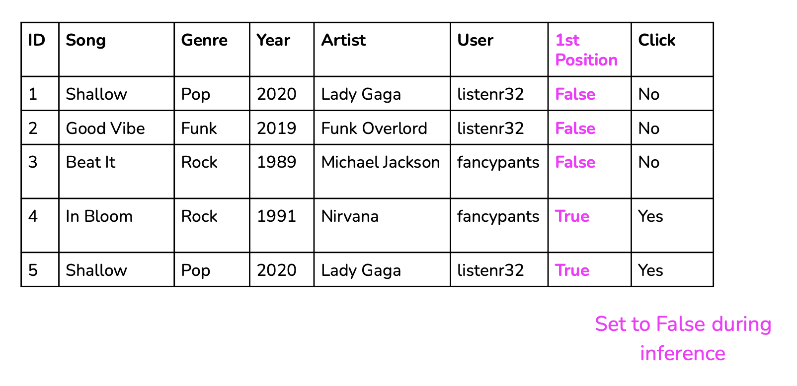
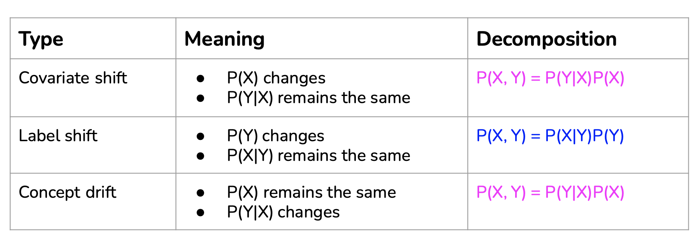
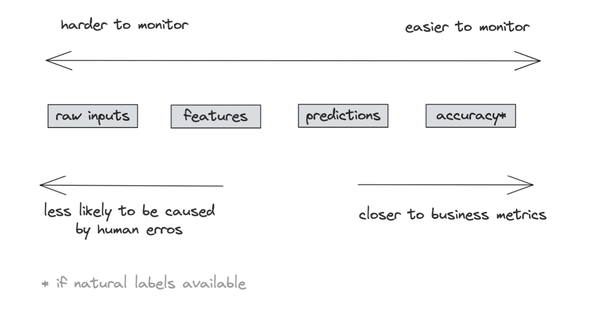

Introduction
A failure happens when one or more expectations of the system is violated.
Two types of expectations:
- Operational metrics: e.g. average latency, throughput, uptime,
- ML metrics: e.g. accuracy, F1, BLEU score.

Causes of operational failures
- Dependency failures,
- Deployment failures,
- Hardware failures,
- Network failure: downtime / crash.
Causes of ML failures
- Production data differing from training data
- Edge cases
- Degenerate feedback loops
Production data differing from training data
- Train-serving skew:
- Model performing well during development but poorly after production.
- Data distribution shifts:
Edge cases
Edge cases are the data samples so extreme that they cause the model to make catastrophic mistakes. Even though edge cases generally refer to data samples drawn from the same distribution, if there is a sudden increase in the number of data samples in which your model doesn’t perform well on, it could be an indication that the underlying data distribution has shifted.
Autonomous vehicles are often used to illustrate how edge cases can prevent an ML system from being deployed. But this is also true for any safety-critical application such as medical diagnosis, traffic control, eDiscovery, etc. It can also be true for non-safety-critical applications. Imagine a customer service chatbot that gives reasonable responses to most of the requests, but sometimes, it spits out outrageously racist or sexist content. This chatbot will be a brand risk for any company that wants to use it, thus rendering it unusable.
An ML model that performs well on most cases but fails on a small number of cases might not be usable if these failures cause catastrophic consequences. For this reason, major self-driving car companies are focusing on making their systems work on edge cases.
Edge cases and outliers
- Outliers refer to data: an example that differs significantly from other examples,
- Edge cases refer to performance: an example where a model performs significantly worse than other examples.
Feedback loops
Feedback loops is a method to get new labels from the responses of users to the model.
Natural labels
Natural labels:
- The model’s predictions can be automatically evaluated or partially evaluated by the system,
- Examples:
- ETA,
- Ride demand prediction,
- Stock price prediction,
- Ads CTR,
- Recommender system.
- Can be engineered.
Delayed labels

Degenerate feedback loops
- When predictions influence the feedback, which is then used to extract labels to train the next iteration of the model,
- Common in tasks with natural labels.

Detect Degenerate feedback loops

Mitigate Degenerate feedback loops
- Randomization:
- Degenerate feedback loops increase output homogeneity
- Combat homogeneity by introducing randomness in predictions
- Recsys: show users random items & use feedback to determine items’ quality

- Positional features
- If a prediction’s position affects its feedback in any way, encode it (like first product in research).

Data Distribution shift

Covariate shift
Covariate in ML are the features \(X\).
Mathematically, covariate shift is when \(P(X)\) changes, but \(P(Y \vert X)\) remains the same, which means that the distribution of the input changes, but the conditional probability of a label given an input remains the same.
Example
- \(Y\) is ‘presence of breast cancer’,
- \(X\) is ‘age’.
Consider the task of detecting breast cancer. You know that the risk of breast cancer is higher for women over the age of 40, so you have a variable ‘age’ as your input. You might have more women over the age of 40 in your training data than in your inference data, so the input distributions differ for your training and inference data. In this case \(P(Y)\) is higher in the training data than in the inference that as the distribution of \(X\) differ. However for a given age, in the training and in the inference data, the probability \(P(Y \vert X)\) of having breast cancer for a women of this age remains the same.
Label shift
Label shift, also known as prior shift, prior probability shift or target shift, is when \(P(Y)\) changes but \(P(X \vert Y)\) remains the same. You can think of this as the case when the output distribution changes but for a given output, the input distribution stays the same.
Example
- \(Y\) is ‘dead because of disease’,
- \(X\) is ‘age of the person greater than 60 years old’.
Assume spread and/or letality of a disease (Covid) \(P(Y)\) decreased for the whole population.
However for a given person that died from this disease, the probability \(P(X \vert Y)\) for this person be older than 60 years old when he died remains the same.
Concept Drift
Concept drift, also known as posterior shift, is when the input distribution remains the same but the conditional distribution of the output given an input changes is $$P(Y \vert X) changes. You can think of this as “same input, different output”.
Example
- \(Y\) is ‘price of an house in San Francisco’,
- \(X\) is a set of features to predict the price of an house.
Consider you’re in charge of a model that predicts the price of a house based on its features. Before COVID-19, a 3 bedroom apartment in San Francisco could cost $2,000,000. However, at the beginning of COVID-19, many people left San Francisco, so the same house would cost only $1,500,000. So even though the distribution of house features remains the same, the conditional distribution of the price of a house given its features has changed.
Other data changes
- Feature change:
- A feature is added/removed/updated,
- Label schema change:
- Original: {“POSITIVE”: 0, “NEGATIVE”: 1},
- New: {“POSITIVE”: 0, “NEGATIVE”: 1, “NEUTRAL”: 2}.
Detecting Data Distribution shift
- Compare statistics: mean, median, variance, quantiles, skewness, kurtosis, …
- Not universal: only useful for distributions where these statistics are meaningful,
- Inconclusive: if statistics differ, distributions differ. If statistics are the same, distributions can still differ,
- Two-sample hypothesis test:
- Determine whether the difference between two populations is statistically significant,
- If yes, likely from two distinct distributions.
Two-sample test: KS test (Kolmogorov–Smirnov)
See Kolmogorov–Smirnov two samples test.
Pros:
- Doesn’t require any parameters of the underlying distribution,
- Doesn’t make assumptions about distribution,
Cons:
- Only works with one-dimensional data.
Type of shifts
- Sudden shifts vs. gradual shifts,
- Spatial shifts vs. temporal shifts.
Temporal shifts: time window scale matters
- Too short window: false alarms of shifts,
- Too long window: takes long to detect shifts.
Addressing Data Distribution shift
- Train model using a massive dataset,
- Retrain model with new data from new distribution:
- Mode:
- Train from scratch,
- Fine-tune,
- Data:
- Use data from when data started to shift,
- Use data from the last X days/weeks/months,
- Use data form the last fine-tuning point.
Monitoring vs. observability
As the industry realized that many things can go wrong with an ML system, many companies started investing in monitoring and observability for their ML systems in production. Monitoring and observability are sometimes used exchangeably, but they are different.
- Monitoring refers to the act of tracking, measuring, and logging different metrics that can help us determine when something goes wrong,
- Observability means setting up our system in a way that gives us visibility into our system to help us investigate what went wrong.
Setting up our system:
- Adding timers to your functions,
- Counting NaNs in your features,
- Logging unusual events e.g. very long inputs.
Monitoring
- Operational metrics,
- ML-specific metrics.
Operational metrics
- Latency,
- Throughput,
- Requests / minute/hour/day,
- % requests that return with a 2XX code,
- CPU/GPU utilization,
- Memory utilization,
- Availability.
ML metrics

- Accuracy-related metrics,
- Predictions,
- Features.
- Most direct way to monitor a model’s performance,
- Collect as much feedback as possible,
- Example: YouTube video recommendations:
- Click through rate,
- Duration watched,
- Completion rate,
- Take rate.
Predictions
- Predictions are low-dim: easy to visualize, compute stats, and do two-sample tests,
- Changes in prediction distribution generally mean changes in input distribution,
- Monitor odd things in predictions:
- E.g. if predictions are all False in the last 10 mins.
Features
- Most monitoring tools focus on monitoring features,
- Feature schema expectations:
- Generated from the source distribution,
- If violated in production, possibly something is wrong,
- Example expectations:
- Common sense: e.g. “the” is most common word in English,
- min, max, or median values of a feature are in \([a, b]\),
- All values of a feature satisfy a regex,
- Categorical data belongs to a predefined set,
- \(FEATURE_1 \gt FEATURE_B\).
Feature monitoring problems:
- Compute & memory cost:
- 100s models, each with 100s features,
- Computing stats for 10000s of features is costly,
- Alert fatigue:
- Most expectation violations are benign,
- Schema management:
- Feature schema changes over time,
- Need to find a way to map feature to schema version.
- Logs:
- Log everything,
- A stream processing problem,
- Dashboards:
- Make monitoring accessible to non-engineering stakeholders,
- Good for visualizations but insufficient for discovering distribution shifts,
- Alerts:
- 3 components:
- Alert policy: condition for alert,
- Notification channels,
- Description,
- Alert fatigue:
- How to send only meaningful alerts?
Monitoring -> Continual Learning
- Monitoring is passive:
- Wait for a shift to happen to detect it,
- Continual learning is active:
- Update your models to address shifts.
Resources
See: